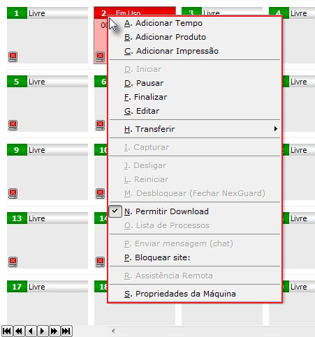
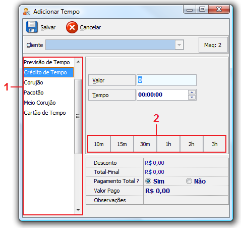
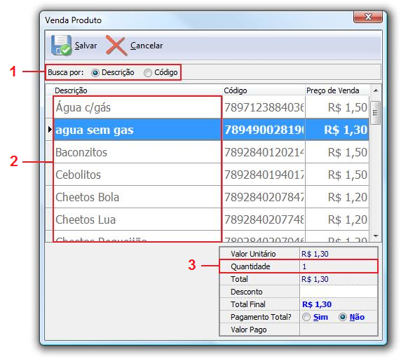
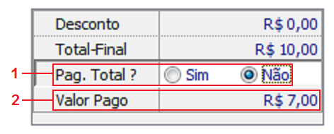
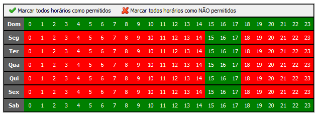

|
Além da troca de nome de Cyber Manager para NexCafé, essa versão trouxe muitas mudanças que facilitam o dia a dia da loja. O atendimento aos clientes ficou muito mais fácil e intuitivo com o uso do botão direito e em especial com as novas telas de Adicionar Tempo e Adicionar Produto. Todo o sistema de caixa foi reformulado para permitir pagamentos parciais. O registro de impressões também evoluiu, assim como a impressão de recibos e muito mais.
Confira abaixo mais detalhes sobre as mudanças realizadas:
| 1. | Botão Direito na lista de máquinas: Todas funções de atendimento ao cliente e controle de acesso agora podem ser realizadas com o clique do botão direito na máquina. |

|
| ▪ | O clique com botão direito do mouse apresenta o menu de opções disponíveis para a máquina. |
| ▪ | Algumas opções como captura de tela e de desligar máquina aparecem somente nesse menu do botão direito. Antes elas apareciam também no topo da tela. |
Assista um vídeo tutorial mostrando esse recurso.
|
| 2. | Nova Tela de Tempo: Ficou radicalmente mais fácil e rápido adicionar tempo aos acessos em andamento. Antes era preciso lidar com muitas telas e opções. Agora você deve clicar com o botão direito na máquina e selecionar "1- Adicionar Tempo". |

|
1- Todos tipos de tempo foram unificados numa única tela. Basta escolher o tipo desejado. Antes havia uma tela diferente para crédito de tempo, outra para pacotes e outra para passaportes.
2- Atalhos de tempo: basta clicar na quantidade de tempo desejada. É muito mais rápido que digitar manualmente o tempo. Obs: Os atalhos de tempo podem ser facilmente configurados para mostrar os tempos mais comuns na sua loja.
Dica: com apenas 3 cliques é possível adicionar tempo para o cliente: o primeiro clique com botão direito mostra o menu, o segundo clique você seleciona a opção "1- Adicionar Tempo" e por ultimo você clica com botão direito em cima da quantidade de tempo que o cliente quer. Esse ultimo clique com botão direito já tem o efeito de Salvar, por isso nem é necessário clicar em Salvar no topo da tela.
Assista um vídeo tutorial mostrando esse recurso.
|
| 3. | Nova tela de venda de produto: Ficou mais rápido adicionar um produto para um acesso em andamento. Você clica com botão direito na máquina e depois em "2- Adicionar Produto". |

|
1- Você pode encontrar o produto pela descrição ou código.
2- Selecione o produto clicando diretamente em sua descrição ou digite parte do nome para realizar a busca.
3- Ajuste a quantidade a ser vendida. Para facilitar o sistema já coloca 1 na quantidade pois é o mais comum.
Dica: com apenas 3 cliques é possível adicionar um produto ao cliente: o primeiro clique com botão direito mostra o menu, o segundo clique você seleciona a opção "2- Adicionar Produto" e o terceiro clique com botão direito em cima do produto desejado. Esse ultimo clique com botão direito já tem o efeito de Salvar, por isso nem é necessário clicar em Salvar no topo da tela.
|
| 4. | Pagamento Parcial: Agora é possível aceitar um pagamento menor que o valor total. Antes era tudo ou nada. Isso vale para qualquer tipo de operação, inclusive o pagamento de débitos. |

|
| ▪ | A tela de pagamento aparece no rodapé de cada operação realizada. Basta então selecionar não no item 1 e informar o valor pago no item 2. |
| ▪ | Para deixar qualquer valor em débito o cliente tem que ter um limite de débito suficiente em seu cadastro. |
Assista tutoriais que mostram essa novidade: Tutorial 1 e Tutorial 2
|
| 5. | Bloqueio de acesso por horário: Configure quais horários o cliente pode e quais não pode acessar os computadores da loja. No Cyber Manager havia um campo onde era possível registrar o horário escolar de cada cliente, mas era só isso. Ficava a cargo do atendente deixar o cliente usar ou não. Agora isso é automático. Marque os horários não permitidos e o deixe que o NexCafé faça o resto. Esse recurso é especialmente importante nas lan-houses para evitar que estudantes joguem em horário de aula e para respeitar os limites de tempo autorizados pelos pais. |

|
No cadastro do cliente existe o quadro de horários permitidos onde você deve marcar em verde os horários que o cliente pode usar o computador e vermelho os horários não permitidos.
É comum que os pais liberem os filhos para jogar por poucas horas durante a semana de aula como nesse exemplo ao lado.
|
| 6. | Novo Visual do NexGuard: As telas do programa que protege as máquinas clientes (NexGuard) tiveram seu visual totalmente reformulado. Além do visual todas operações ficaram muito mais fáceis e intuitivas de serem realizadas. Confira o novo visual: |
| 7. | O registro automático de impressões evoluiu bastante: |
| ▪ | Agora é possível identificar automaticamente o tipo correto de impressão quando se tem mais de uma impressora realizando funções diferentes. Por ex: 1 impressora para colorido e 1 impressora para preto e branco; |
| ▪ | Agora o sistema é compatível com o DeepFreeze (e outros sistemas semelhantes). Antes nas lojas que utilizavam esse software o registro automático de impressões não funcionava; |
| ▪ | Antes as impressões eram tratadas como se fossem produtos de venda, agora isso representa um modulo à parte facilitando o gerenciamento sem misturar com análise de vendas / produtos. |
| 8. | Caixa: mais detalhes sobre cada operação realizada: |
| ▪ | Agora, toda operação de atendimento ao cliente gera uma transação no caixa, mesmo que não envolva uma movimentação financeira. Isso facilita a conferência do caixa. Itens como Inicio de Acesso (havia apenas o registro de Fim de Acesso) e Transferência de Máquina agora ficam registrados no caixa no momento em que ocorreram; |
| ▪ | Agora é possível cancelar um item do caixa. Antes existia apenas a opção de dar desconto. Mas ficava faltando uma solução para quando se faz algo totalmente errado. Então agora é possível cancelar ! Mas isso obviamente só pode ser feito por usuários autorizados e mesmo assim fica registrado o cancelamento no caixa; |
| ▪ | A totalização do caixa traz agora uma aba mostrando a quantidade de acessos e tempo por cliente. Isso permite descobrir por exemplo, quais são os clientes mais assíduos da loja. |
| 9. | Recibos em impressora laser/jato de tinta: A emissão de recibo agora suporta impressoras de jato de tinta ou laser. Antes funcionava apenas em impressoras matriciais. Além disso, agora existe recibo para todo tipo de operação que envolva pagamentos de clientes. Os recibos também tem mais opções de configuração de cabeçalho e rodapé e de quando devem ou não ser impresso. Assista um vídeo tutorial sobre esse assunto. |
| 10. | Mais leve e mais rápido: A performance do NexAdmin melhorou de forma significativa. Isso é um beneficio em especial para as lojas que possuem muitas máquinas (30 ou mais). O sistema vai usar menos memória e menos processador, se comportando de forma mais leve. |
|